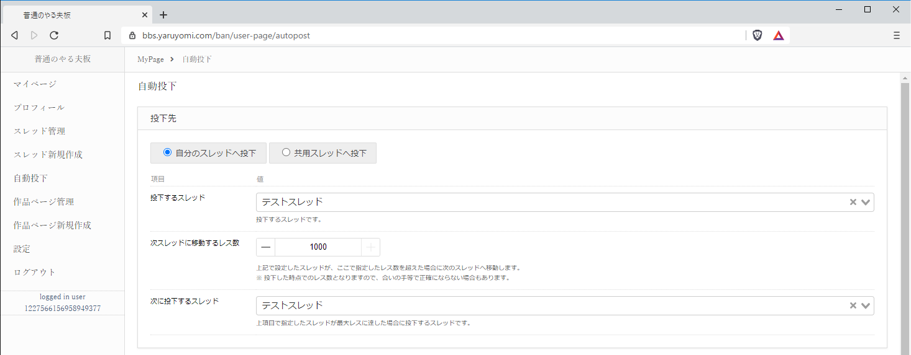
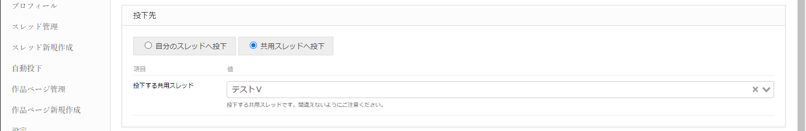
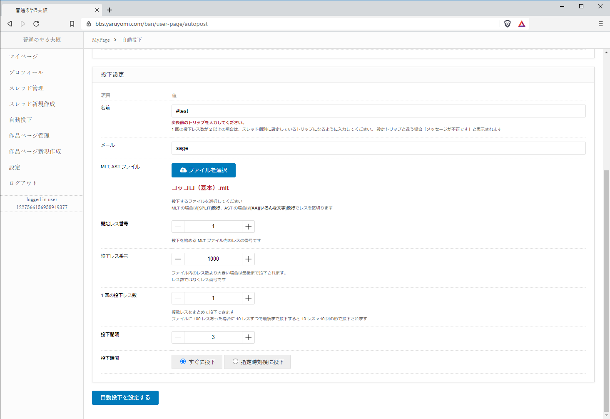
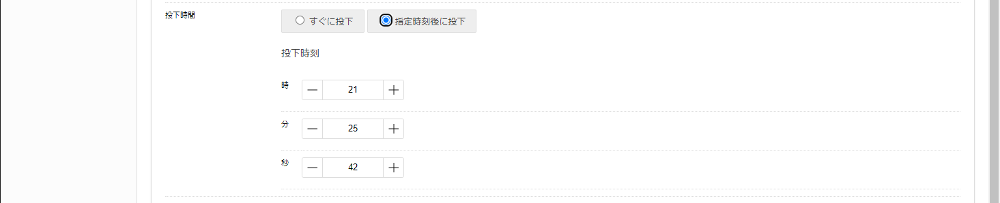
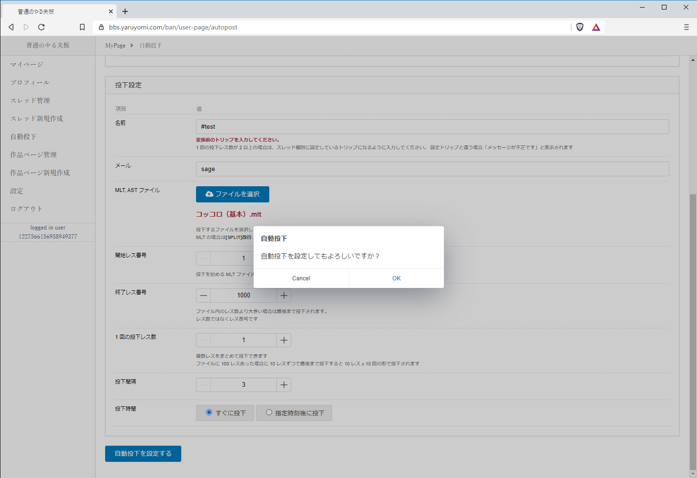
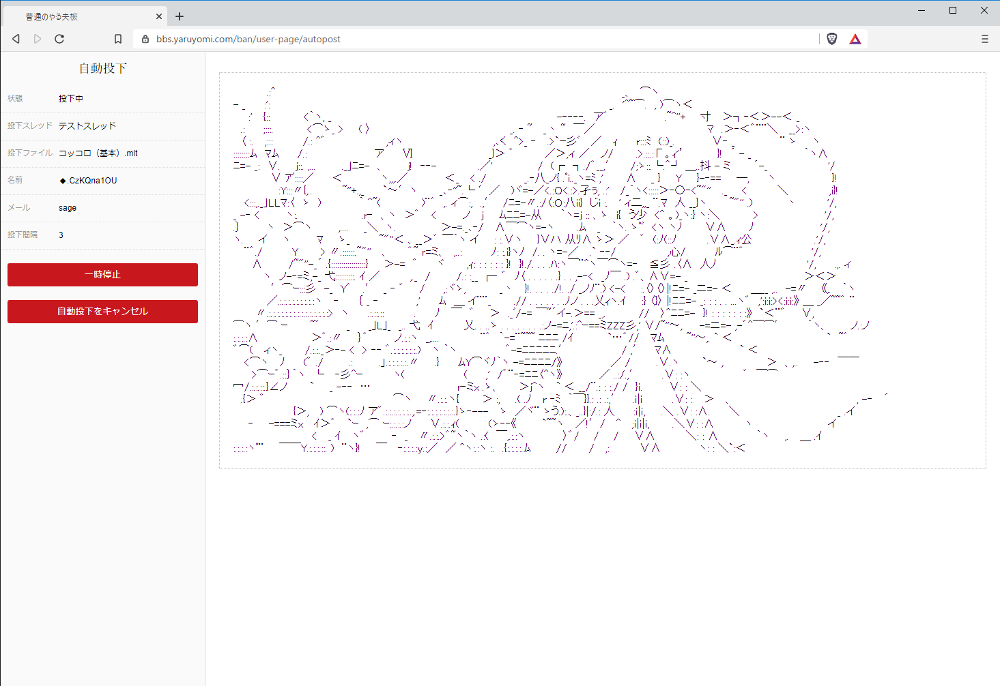
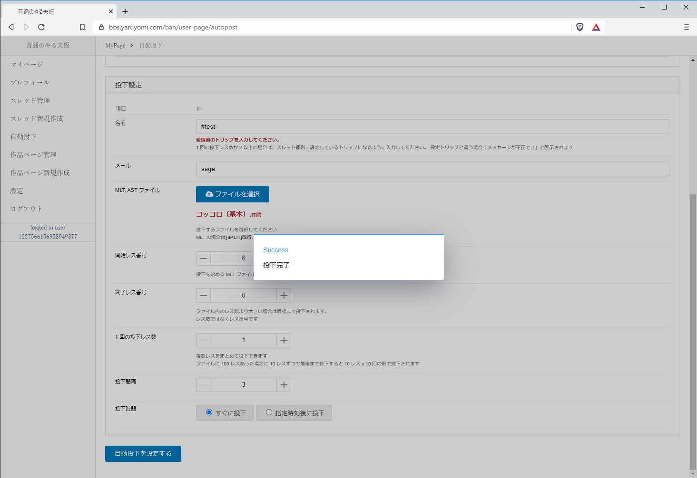

自動投下¶
自動投下を行うには、ユーザーページのメニューの「自動投下」を押下します。
投下先¶
自分のスレッドへ投下¶
「自分のスレッドへ投下」を押下し、投下するスレッドを選択します。
次スレッドの情報は任意で、次スレッドへ投下先を自動切り替えしたい場合に設定して下さい。
共用スレッドへ投下¶
「共用スレッドへ投下」を押下し、投下するスレッドを選択します。
共用スレッドは他ユーザも投下に使用しますので、間違えないようにご注意下さい。
投下設定¶
項目 |
説明 |
|---|---|
名前 |
投稿者の名前です。トリップを入力する際は変換前の値を入力して下さい。 |
メール |
メールです。sageなど |
MLT,ASTファイル |
投下するファイルを選択して下さい。MLT形式、AST形式に対応しています。 |
開始レス番号 |
投下するファイル内で、スタートとなるレス番号を指定して下さい。 |
終了レス番号 |
投下するファイル内で、最終レスとなるレス番号を指定して下さい。 |
1回の投下レス数 |
1回の投下数です。2レス以上を同時に投下したい場合、名前で指定したトリップをスレッド設定で設定されているトリップと一致させる必要があります。 |
投下間隔 |
投下間隔の秒数です。 |
設定が完了したら「自動投下を設定する」ボタンを押下します。
投下時間に「指定時刻後に投下」を選択した場合は、投下を開始する時間を時分秒で指定して下さい。
確認ダイアログが表示されますので、「OK」を押下します。
投下が開始されます。
左側に投下の設定内容、右側に現在投下したレスの内容が表示されます。
「一時停止」ボタンを押下すると、自動投下を一時停止できます。
再開する場合は「投下を再開」ボタンを押下して下さい。
自動投下をキャンセルしたい場合は、「自動投下をキャンセル」ボタンを押下し、確認ダイアログの「OK」を押下します。
投下が完了すると、「投下完了」とメッセージが表示されます。